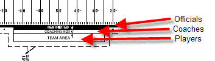

2023 NCAA Football
Rules Book
UIL Exceptions
|
6 Man Rules
Every participant in the collegiate and high school football scene shares the responsibility for ethical conduct that enhances the future of this American tradition. Listed below are some of the points of emphasis that the Rules Committee, UIL and the Amarillo Chapter consider important.
Sideline Management/Enforcement will be paramount in the upcoming season. Below is the sideline diagram from the rule book, Rule 1-4, showing the Officials, Coaches and Players area. This will be strictly enforced.

No matter what is seen during college games on Saturday and professional games on Sunday and Monday, every player must wear mandatory equipment which includes:
- Mouthpiece, no exceptions.
Get them to put their mouth piece in their mouth- Hip pads, thigh pads, knee pads, tailbone protector. Pants must cover the knee.
Get the problem corrected- No bandanas may be exposed on the field of play or end zone.
Send them off the field for a play- Jerseys may not be taped or altered in any manner.
Send them off the field for a play- Jerseys must come to the top of the pants (UIL) and undershirt must be tucked in pants. If jersey is long enough to tuck into pants, it must be tucked in.
Get the shirts tucked in- Only eye shields of a hard, clear (transparent) plastic may be worn. There will be no waiver granted for any player by the UIL for any circumstance.
Send them off the field
- These are no longer delay of game penalties.
Holding
Coaches, players and friends of football view holding
opponents and the non-enforcement of holding as a major concern. During the
past decade, this foul has risen from being low on the list of infractions to
the most frequently penalized violation. The Football Rules Committee receives
many complaints about illegal tactics. Grabbing opponents' shirts and
encircling their bodies with outstretched arms are the most prominent. The
illegal blocking techniques of grasping, encircling, clamping or otherwise
impeding defensive players to neutralize a charge are infiltrating the game at
an alarming rate. Recent changes in football rules have liberalized the use of
hands and arms in legal blocking activities and offensive players must
correctly use these techniques in neutralizing opponents. Coaches and players
should thoroughly understand the rules for proper offensive and defensive use
of hands. The teaching of intentional holding will break down rather that aid
in the building of the character of players.
Attitudes
Players have responded well to recently implemented rules
prohibiting fighting, demeaning opponents and choreographed demonstrations.
Teams are to be commended for showing proper respect for opponents as well as
displaying strong school spirit. Uniforms have become much more representative
of high schools, colleges and universities with concentration on identical
helmets, shirts, pants and socks.
Sportsmanship
The football player who intentionally violates a rule is
guilty of unfair play and unsportsmanlike conduct; and whether or not he
escapes being penalized, he brings discredit tot he good name of the game,
which it is his duty as a player to uphold.